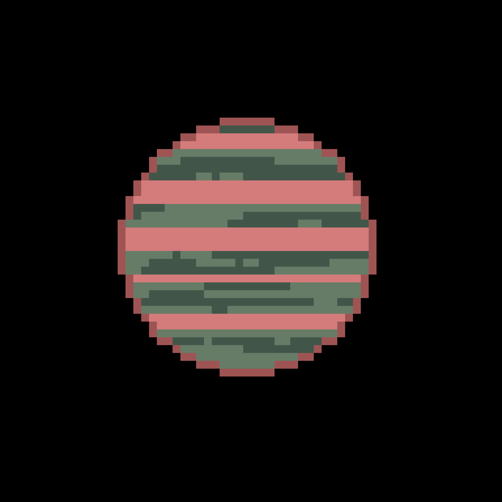

GJ 436 b är en neptunus-lik planet som har en massa som är 21 gånger så stor som jorden. Temperaturen på planeten är 439°C. Trots det, finns det is på planeten. Isen kan förbli i fast form på grund av planetens gravitation.
Planeten var först upptäckt 31 augusti 2004 av R. Paul Butler och Geoffrey Marcy från Carnegie Institute of Washington och University of California, Berkeley.